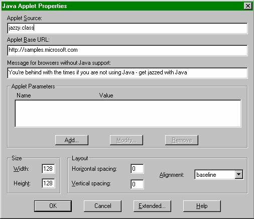

|
| ||
|
| ||
Jeff Brown
Rafael M. Muñoz
Microsoft Corporation
May 27, 1997
The following article was originally published in the Site Builder Magazine (now known as MSDN Online Voices) "Web Men Talking" column.
Contents
Bake a batch - Using cookies on Web sites
Life-styles from Hawaii - Using "mailto:" with forms
Hello, is anybody out there? - Setting up chat rooms
Watch us pull an applet out of a hat - Adding Java applets with FrontPage 97
Coffee or tea? - When to use Java or ActiveX
Unsolved DSN mysteries - Differences between Data Source Names
We're finding ourselves surrounded by food metaphors: first Java, and now cookies. What is this? Some kind of a plot? All kitchen imagery aside, cookies may provide the perfect slam-dunk accompaniment to your coffee or your Web site, and we know the value of a good treat when we see one. We've even made yet another tasty sample. Enjoy!
You'll also find mail from Hawaii (ooh...), information on chat rooms and DSN, and--as always--more Java. Get your coffee, put on your thinking caps, and please, remember to laugh at our jokes.
Dear Web Men:
I was wondering how in the world you make a cookie to put on a client’s computer and how you can grab the information from that cookie to do certain things. For example, if they click on an image that takes them somewhere, that image will change its look indicating they have been there.
Michael
The Web Men reply:
Cookies remind us of those tasty homemade ones grandma used to bake. Working with cookies is not super difficult, Michael; however, some baking--er, work--is required.
Most people who have been doing anything on the Web for a while have probably heard of cookies. For the benefit of those who haven’t, and for those who want to know more about them, we will provide a bit of explanation before answering Michael’s specific questions.
Cookies are just chunks of data stored on your computer. Nothing too magical about them, even though some folks refer to them as "magic cookies."
Here is what a cookie contains:
When a user tells the browser to load a page, a browser that supports cookies (like Internet Explorer or Netscape Navigator) searches the client machine's stored cookies to see if there is one with the domain name of the server where the page lives. It also tries to match the path in the URL you have given for the page. If it finds matches, the browser sends those matches in an HTTP (Hypertext Tranfer Protocol) header as part of the request to the server. Then it is up to the server to make sense of the cookie information.
To get a cookie on the client computer in the first place, the server sends an HTTP set-cookie header as part of the response to a user’s request for a page. The browser takes this information, and stores it for later use. You can set and retrieve cookies from the server by using a Common Gateway Interface (CGI) or Active Server Pages (ASP) application.
To help answer Michael’s first question (the "how in the world..." one), we have put together a sample showing how to use cookies. This should also please any residents of Missouri (it is the Show Me State, you know).
The sample uses ASP to store and retrieve a cookie on the client. The cookie stores the name, a count of the number of visits, and preferred text color and background color for the user. The first time the users visit the page, they will be prompted for their name and preferences. From then on, they will always be sent a page that uses their preferred colors, and they can change the settings at any time.
ASP makes it extremely easy to deal with cookies, both getting them from the client, and setting them. It provides cookies collections as part of both the Request (represents request from client) and Response (represents response sent to client) objects. You use these collections to set and read the properties of cookies, such as their value, expiration date, domain name, and so forth.
There are several possible answers to Michael's second question (how to change images to indicate a user has visited an area on a site). One possibility is that the cookie maintained on the client can include some data to flag which areas on the site have been visited. To not take up a lot of space, the data needs to be encoded some way--maybe just a string of 1s and 0s--where 1 means that an area has been visited, and 0 means it has not. An ASP or CGI script examines this data to decide which type of image--the visited or unvisited version--should be included on the page sent back to the client. The script also has to update the cookie when the user visits an area for the first time.
In our discussion of cookies, we should also give credit where it is due. The people over at Brand N (that’s Netscape to you and me) came up with the idea for cookies. Work is also being done to standardize cookies (HTTP State Management Mechanism, to be more scientific). David M. Kristol at Bell Labs maintains versions of the working documents  he has co-authored on the subject.
he has co-authored on the subject.
You might also want to check out Cookie Central  , a well-organized site with some good general information on cookies. There is also discussion there of the pros and cons of cookies, as some people object to them because of privacy issues.
, a well-organized site with some good general information on cookies. There is also discussion there of the pros and cons of cookies, as some people object to them because of privacy issues.
Dear Web Men:
Aloha from Maui...
I have been doing Web sites over here and have recently been working with a server that does not offer CGI server-side programs. All I need to do is create a simple form that allows the customer to fill in the form and then have the contents of the form e-mailed to the Web site business owner.
It really seems that CGI server side programs are "overkill" for such a simple task, however, forms created with the ACTION="mailto..." tag do not allow the contents of the completed form to be e-mailed when the user presses the "submit" button. Instead, a blank e-mail screen opens up.
Am I overlooking something, or is it just not possible to do use an ACTION="mailto..." tag in forms at this time?
Thank for you help.
David Regier
The Web Men reply:
Mahalo, David. Those two weeks in Hawaii really paid off. For those of you who are not multilingual, the translation is "Thank you, David." Aren't you the wise one--using the Internet and mailto:, while basking in the Hawaii sun.
We have some good news and some not-so-good news; which would you like to hear first? Okay, we've
decided to start with the not-so-good news. Internet Explorer 3.02  is considered an open
system that allows any mail client to be used; therefore, there is no way to determine which mail client is being
used. Because of this, Internet Explorer 3.02 does not support the mailto: option with forms. For more
information on this, see the Microsoft Knowledge Base article
'"Mailto" Link Opens Empty E-mail Message,' Q154864
is considered an open
system that allows any mail client to be used; therefore, there is no way to determine which mail client is being
used. Because of this, Internet Explorer 3.02 does not support the mailto: option with forms. For more
information on this, see the Microsoft Knowledge Base article
'"Mailto" Link Opens Empty E-mail Message,' Q154864  .
.
Don't fret yet, David. The good news is two-fold. First, other browsers do support the mailto: tag. This is because they have a mail client built in, and know exactly how to format the data coming from the form. Let it never be said that we don't provide all the facts, because we must say that one of those browsers is Netscape Navigator.
Now for the second part of our good news: Let it also never be said that the Web Men don't provide the greatest,
most up-to-date information--well, as much as possible. We pulled a lot of strings and
cashed in a lot of favors--we're talking huge favors--and came up with some great news. According to our sources,
the mailto:
option with forms will be supported starting with the next preview release of Internet Explorer 4.0  . How's that for late-breaking news? Unfortunately, not even our favors were
big enough to get a release date for the next preview, so keep checking back.
. How's that for late-breaking news? Unfortunately, not even our favors were
big enough to get a release date for the next preview, so keep checking back.
Dear Web Men:
I am interested in creating my own chat room, but I have limited knowledge about CGI, Java, what have you. Is their no hope for me? I was hoping to find some sort of software kit, or at least a FAQ. No luck.... You're brains--please enlighten me.
Robert H. Brown
The Web Men reply:
There is definitely hope for you, Robert! A variety of CGI and Java-based approaches and services for setting up chat rooms are available. You may have found a sampling of them by searching the Web with an Internet search engine  . If you don’t want to invest a lot of time building the chat room, consider using one of them.
. If you don’t want to invest a lot of time building the chat room, consider using one of them.
But if you are a do-it-yourselfer, Microsoft provides several different software development kits (SDKs) for chat. One is the Chat Control SDK  , which includes a very useful ActiveX control that you can embed on your Web pages or use within a stand-alone application, such as one written in Visual Basic. The SDK includes samples of both.
, which includes a very useful ActiveX control that you can embed on your Web pages or use within a stand-alone application, such as one written in Visual Basic. The SDK includes samples of both.
The Chat Control SDK allows you to create the client, or user interface, for your chat room, but you still need a chat server to host the room. The chat server manages the communication between the chat clients. The Chat Control can communicate with chat servers through either the Microsoft Internet Chat (MIC) or Internet Relay Chat (IRC) protocols.
So you also need to find a chat server. Look for an IRC server, or use the Microsoft Commercial Internet System (MCIS) Chat server  , to host your room. Or you can set up your own server.
, to host your room. Or you can set up your own server.
To find out more about IRC, existing IRC servers, and how to become an operator (or chan-op) of an IRC channel, check out the numerous IRC resource sites on the Web, such as Connected Media's IRC Central site  . One possibility is to become a chan-op of an IRC channel, and then set up the Chat Control on your Web site to always use that channel.
. One possibility is to become a chan-op of an IRC channel, and then set up the Chat Control on your Web site to always use that channel.
Another approach you might consider for setting up chats, and one that enables many other forms of real-time communication among people on the Internet, is to use Microsoft NetMeeting  . It has text-based chat capabilities, support for real-time voice and video transmission via the Internet, as well as many other features. It will be included with the Internet Explorer 4.0 final release. It is also available now as an add-on to current versions of Internet Explorer
. It has text-based chat capabilities, support for real-time voice and video transmission via the Internet, as well as many other features. It will be included with the Internet Explorer 4.0 final release. It is also available now as an add-on to current versions of Internet Explorer  , and as part of the Internet Explorer 4.0 Platform Preview release
, and as part of the Internet Explorer 4.0 Platform Preview release  .
.
A NetMeeting Resource Kit and SDK  are also available. The Resource Kit provides information on how to set up and use NetMeeting within an organization. The SDK includes an ActiveX control that you can use to incorporate Internet conferencing into your Web pages (similar to using the Chat Control SDK to incorporate chat features in pages).
are also available. The Resource Kit provides information on how to set up and use NetMeeting within an organization. The SDK includes an ActiveX control that you can use to incorporate Internet conferencing into your Web pages (similar to using the Chat Control SDK to incorporate chat features in pages).
Dear Web Men:
OK, here's the deal; I get a cool Java applet off the Web called thingy.class. I use the FrontPage editor and "insert Java applet" to stick it in my Web page. I use its name "thingy.class" and specify its URL as the path to my folder on the hard disk. I save it, view it in the browser (IE 3.0 naturally!) and PRESTO!...or not. It won't display a darn thing. In the status bar, it says something about a null string. What the heck am I doing wrong?
Constantine Daicos
The Web Men reply:
Nothing up our sleeves and PRESTO, it works for us! But then isn't that the way it always goes? You take your car to the shop and it works like a charm while the mechanic looks at it; but as soon as you drive away, that metal against metal sound in the engine returns. We don't have much to go with here. We personally have not found the site with "thingy.class," so we don't really know what it does, and we are shooting from the hip.
You might recall that a month or so ago, some security problems were found in Internet Explorer 3.0.
(Check out the Microsoft Security Advisor  for the most
up-to-date information on security issues.) During that time, there was a new build of the Microsoft Virtual Machine (VM) for Java,
build 1516 (refer to the Microsoft Presents Java
for the most
up-to-date information on security issues.) During that time, there was a new build of the Microsoft Virtual Machine (VM) for Java,
build 1516 (refer to the Microsoft Presents Java  site). This build unfortunately contained a bug that didn't allow Java classes to access images or sound unless the Java
class was in the Java CLASSPATH. This was fixed in a later build of the VM, and we are currently up to build 1518.
You can get the latest VM from the Microsoft Presents Java
site). This build unfortunately contained a bug that didn't allow Java classes to access images or sound unless the Java
class was in the Java CLASSPATH. This was fixed in a later build of the VM, and we are currently up to build 1518.
You can get the latest VM from the Microsoft Presents Java  site, just follow the
Java VM update link in the left-hand frame.
site, just follow the
Java VM update link in the left-hand frame.
We bet this is what you are running into. Now Constantine, you are probably saying, "This has nothing
to do with my problem"--which is what we all tell
our car mechanics, too! But we suggest that you upgrade to the latest Microsoft VM for Java and see if that doesn't
fix your problem. As we said, it appears that FrontPage 97  is setting things up
right with our configurations and we are always checking things with the lastest releases.
is setting things up
right with our configurations and we are always checking things with the lastest releases.
Oh, for those of you who are saying, "Hey, how does one add a Java applet to one's Web page using FrontPage 97?" use the "Insert.Other Components.Java Applets..." menu option, which will bring up the Java Applet Properties dialog and fill in the blanks. We have included a sample of the dialog here:

Dear Web Men:
Most of the Java applets I've seen are for animations. My boss pays me to do real work, not cutesy fun stuff. When is Java an appropriate tool?
The few Java applets I've seen that do something serious are slow to download. Each and every time I call up one of those pages, I wait a long time. My coworker has written a 300K ActiveX control for order entry. It validates user inputs and posts orders to the database. Because it is ActiveX, it doesn't have a long download time each time the order entry page is called. It offers a lot of functionality by using many preexisting ActiveX controls, such as Grid and Calendar controls.
Where does Java excel? What does it have to offer that ActiveX does not? When should it be used instead of ActiveX?
John
The Web Men reply:
Java jingoists might be a little offended by your "cutesy" and "real work" comments. But you have some excellent questions John, and ones we’re sure a lot of people wonder about.
First, we want to point out that there are ways you can decrease the download time for Java applets. Microsoft has a technology called cabinets (or CAB), that Java developers can use to gather up and compress their Java files into one package, reducing download time significantly. Check out the CAB pages in the MSDN Online Web Workshop's Web Content Management section. Sun Microsystems, Inc. decided more recently to provide this capability to Java developers in the form of Java Archive  (JAR) files as part of their Java Development Kit (JDK) 1.1.
(JAR) files as part of their Java Development Kit (JDK) 1.1.
Now back to your questions:
Where does Java excel?
Java excels in its potential cross-platform capabilities. In theory, a Java applet or application should run without a hitch on any computer that implements a Java Virtual Machine (VM). In reality, this is not true today, and it is questionable whether it will ever be true. Currently, you still often have to make tweaks to your Java code to accommodate differences in behavior on the different Java VMs. But as the language itself and Java VM technology mature this should improve.
Java is great as a programming language. Both of us have C++ programming backgrounds, so we like Java and program in it a lot because it includes many of the best features of C++ and excludes the more obscure and little-used features. Java is a true object-oriented programming language, so it makes the software developer’s job easier. But keep in mind is that it does require a good amount of programming knowledge to do serious programming in Java (one needs to understand what object-oriented programming is first).
What does it have to offer that ActiveX does not?
A Java applet really offers nothing that can't be done with an ActiveX control.
ActiveX controls, and ActiveX technologies in general, can do anything Java can do, plus a whole lot more. And they can be written in a variety of programming languages, including Java  .
.
In fact, with the Microsoft VM for Java  , Java applets and ActiveX controls can easily complement each other because of the COM (Component Object Model) support built in. Every public Java class and Java Bean is exposed to ActiveX controls, and vice versa.
, Java applets and ActiveX controls can easily complement each other because of the COM (Component Object Model) support built in. Every public Java class and Java Bean is exposed to ActiveX controls, and vice versa.
ActiveX is also "closer to the iron," meaning that it is closer to, and more integrated with the native operating system. This allows you to build powerful, efficient ActiveX controls. Right now, "native operating system" means Windows 95, Windows NT, and the Macintosh. But ActiveX is being ported to Unix platforms, as well.
Java does offer a stricter security model, often referred to as "sandboxing." However, this places lots of limits on the types of functionality you are able to provide in a Java applet. For example, you cannot permanently store or easily read information on the local machine. ActiveX controls use a different approach to security, called code signing, that uses Microsoft Authenticode technology. (For more details on what Microsoft is doing about security, check out the Microsoft Security Advisor Program site  .)
.)
When should it be used instead of ActiveX?
If you are developing an application that must be viewed on a system that does not support ActiveX, and the problem cannot be solved with a combination of HTML and scripting, then clearly you need to think about using a Java applet (assuming the same system supports Java).
If it turns out that you really start to dig Java as a programming language, then just use it. Keep in mind that in many cases when building a Java applet you are going to run into limitations that you wouldn’t encounter if you were building an ActiveX control.
The moral of this story (like many others) is that you should always use the right tool for the job. Sometimes it will be a Java applet, sometimes it will be ActiveX controls, and often it can be a combination of both. ActiveX and Java are not mutually exclusive.
Dear Web Men:
What's the difference between User DSN, System DSN, and File DSN? I'm stuck accessing my data from my SQL Server 6.5! I'm using Visual InterDev (Visual Studio 97) to develop Active Server Pages for my Web server.
Terence Wee
The Web Men reply:
Egads, Terence! It sounds like you need some help.
For the uninitiated, DSN stands for Data Source Name. It is the name you use to identify a database or other source of data when using Open Database Connectivity (ODBC)  , which is a technology for SQL-based data access.
, which is a technology for SQL-based data access.
There are several differences between User, System, and File DSNs. The major difference is that User and System DSNs, and their corresponding connection information, are stored in the Windows Registry (system configuration database) on the machine where you register the data source. All connection information for a File DSN is stored in a text file that has a .DSN extension.
Because of this, the Visual InterDev  documentation makes the distinction between Machine Data Sources and File Data Sources. It refers to User and System DSNs as Machine Data Sources, because they are registered on a particular machine. It refers to File DSNs as File Data Sources, because they exist in files.
documentation makes the distinction between Machine Data Sources and File Data Sources. It refers to User and System DSNs as Machine Data Sources, because they are registered on a particular machine. It refers to File DSNs as File Data Sources, because they exist in files.
The advantage to using File DSNs is that they can easily be shared among users and machines. Assuming users have the correct ODBC driver and access to the database the DSN represents, they can just copy the .DSN file to their machine (typically to the \Program Files\Common Files\Odbc\Data Sources directory). From there, database tools, like those in Visual InterDev, can read them. You do not need to make any changes to the Windows Registry on each machine.
The advantage to Machine DSNs is that they are easier to access when multiple applications on the machine use the same data source. All the applications can refer to the same DSN that is in the Windows Registry, and they do not all need to individually read the connection information from the .DSN file. This also makes it easy to change the database to which the DSN is referring. Just change the settings in the Windows Registry and it will change the settings for all the applications using the DSN.
Okay, one more difference for you: the difference between User and System DSNs. A User DSN can only be accessed by the user who created it, and only on the machine where the DSN is registered. All users on the machine, regardless of the user who registered it ,can access a System DSN.
Check out the Adding a Data Connection to a Web Project section of the Visual InterDev User’s Guide, Overview book. It has a good description of the differences between DSNs and how they are used in Visual InterDev Web projects.
When working with Visual InterDev, it is highly recommended that you use File DSNs. Also, if you are doing development on one server, but moving the final product to another server (which is quite likely), take a look at Microsoft Knowledge Base article Q168418, HOWTO: Moving a Web from a Staging Server to a Production Server  .
.
Jeff Brown, when not forcing family and friends to listen to Zydeco and country blues music, provides technical support for the Microsoft MSDN Online with a smile.
Rafael M. Muñoz (the even bigger smile above) is a part-time Adonis, and full-time support engineer for Microsoft Technical Support. He takes it very, very personally every time you flame Microsoft.
Did you find this article useful? Gripes? Compliments? Suggestions for other articles? Write us!
© 1999 Microsoft Corporation. All rights reserved. Terms of use.